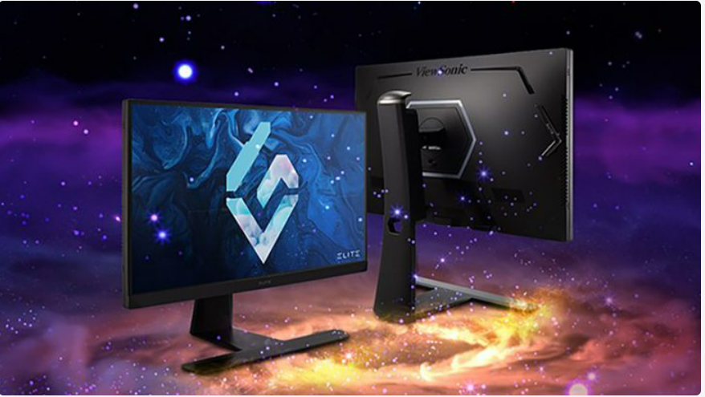
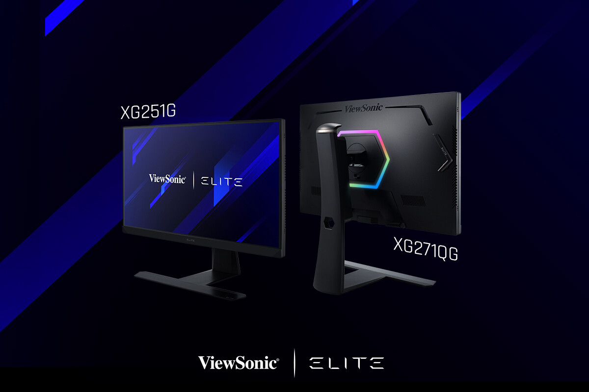

ViewSonic trang bị công nghệ Mini-LED Backlight cho dòng màn hình gaming ELITE
Dòng màn hình gaming ELITE với công nghệ đèn nền Mini-LED Backlight sẽ tối ưu độ tương phản và hiển thị hình ảnh chi tiết hơn ngay cả trong môi trường thiếu sáng.
Dòng màn hình gaming ELITE với công nghệ Mini-LED backlight có kích thước từ 27inch đến 34inch được ViewSonic chính thức giới thiệu tại triển lãm CES 2022 diễn ra từ ngày 5 – 7/1 vừa qua. Dòng màn hình mới gồm các phiên bản ELITE XG272G-2K, ELITE XG321UG và ELITE XG341C-2K hứa hẹn mang đến cho game thủ những trải nghiệm hình ảnh chi tiết và tuyệt vời hơn.
Trong đó, màn hình XG272G-2K sở hữu tần số quét lên tới 300Hz và được tích hợp công nghệ Nvidia G-Sync Ultimate. Sản phẩm sử dụng công nghệ hiển thị IGZO (Indium Gallium Zinc Oxide) cho mật độ điểm ảnh cao hơn, đạt tiêu chuẩn hiển thị VESA DisplayHDR 1000 và có độ bao phủ màu 95% DCI-P3. Sản phẩm dự kiến sẽ được bán ra thị trường toàn cầu vào Quý 3/ 2022.
Màn hình ELITE XG321UG cũng được trang bị công nghệ mới nhất Nvidia G-Sync Ultimate nhưng có tần quét chỉ 144Hz và thời gian phản hồi 3ms (OD). Bù lại, màn hình có độ phân giải hiển thị lên đến 4K, đạt tiêu chuẩn hiện thị VESA DisplayHDR 1400, có độ phủ màu 99% Adobe RGB và độ chính xác màu Delta E.
Cuối cùng là dòng màn ELITE XG341C-2K cũng sở hữu tần số quét 200Hz (ở chế độ ép xung), có thời gian phản hồi 1ms (MPRT) và hỗ trợ công nghệ đồng bộ hình ảnh AMD FreeSync Premium Pro. Màn hình còn được thiết kế cong 1500R, có độ sáng 1.400 nits và độ bao phủ màu 97% DCI-P3. Trên dòng màn hình này, ViewSonic còn trang bị thêm cổng USB Type-C hỗ trợ sạc với công suất 90W và cổng vào hình ảnh HDMI 2.1.
Hai dòng màn hình ELITE XG321UG và ELITE XG341C-2K sẽ được ViewSonic mở bán ra thị trường toàn cầu trong quý 1 này. Ngày mở bán chính thức cùng giá bán chưa được hãng công bố.